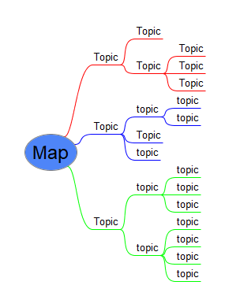

Topic-based SGML?
Really?
Balisage 2021
Ari Nordström | ari.nordstrom@gmail.com
Last year, I got myself a new client...
Go-to guy for everything markup
XSLT, FO, XML standards
DITA
S1000D
ATA (iSpec 100, 2200)
SGML?
SLM and engineering data

Marry CAD with topics

Enter Siemens Teamcenter
Teamcenter CMS module

It's all about topics
Decomposing documents into topics
XML Attribute Mapping
- DITA, S1000D...
-
Any XML DTD...
...and SGML
The Power of a Good Sales Team
The client:
- Aerospace manufacturer
- Already uses Teamcenter
- S1000D
- ATA iSpec 2200 SGML
Yes, Teamcenter supports SGML
But Does It Really?
No
Why Not?
Graphic entities
<!ENTITY g5027619-00.cgm SYSTEM "g5027619-00.cgm" NDATA cgm>
<!ENTITY name SYSTEM "name.suffix" NDATA cgm>
Preprocessing to rename files - didn't want to edit the SGML itself, just the entity declarations and filenames
<!ENTITY name.suffix SYSTEM "name.suffix.suffix" NDATA cgm>
DOCTYPE

EMPTY elements
<PARA>S/B<SBNBR>73-0177</SBNBR>,
<REVST>Revision 1<REVEND></PARA>
<PARA>S/B<SBNBR>73-0177</SBNBR>,
<REVST>Revision 1</REVST></REVEND></PARA>
</SUBTASK></TASKPROC>
</REVEND>
</TASK></PGBLK></SUBJECT></SECTION></CHAPTER></EM>
Dropping content
<SBEFF EFFTEXT="Bolthead at Bolthole No. 15 Facing
the 12:00 O'clock Position" SBNBR="72-0078" SBCOND="PRE SB">
<SBEFF EFFTEXT="Bolthead at Bolthole No. 15 Facing
the 12:00 o">
Publishing
DSSSL, anyone?
No DSSSL, (mostly) XML technologies:
(we already had DITA to HTML stylesheets, so...)
- SP for SGML to XML syntax -
ATA-like XML
- XProc pipeline to convert to
monolithic DITA
- XSLT to break apart to DITA topics
- DITA stylesheets
The XML bits were uncomplicated
0-em-basic-structure.xml
1-ATA2DITA_main-structure.xsl.xml
2-ATA2DITA_tasks.xsl.xml
3-ATA2DITA_front-matter.xsl.xml
4-ATA2DITA_tfmatr.xsl.xml
5-ATA2DITA_prclists.xsl.xml
6-ATA2DITA_figtopic.xsl.xml
7-ATA2DITA_effectivity.xsl.xml
8-ATA2DITA_chgdesc.xsl.xml
9-ATA2DITA_dates.xsl.xml
10-ATA2DITA_lxlists.xsl.xml
11-ATA2DITA_table.xsl.xml
12-ATA2DITA_lists.xsl.xml
13-ATA2DITA_block-level.xsl.xml
14-ATA2DITA_graphics.xsl.xml
15-ATA2DITA_delete-ind.xsl.xml
16-ATA2DITA_inline.xsl.xml
17-ATA2DITA_xref.xsl.xml
18-ATA2DITA_ata-inline.xsl.xml
19-ATA2DITA_topic-ids.xsl.xml
20-ATA2DITA_mtoss.xsl.xml
21-ATA2DITA_misc-amattrs.xsl.xml
22-ATA2DITA_revmarkers.xsl.xml
23-ATA2DITA_attrs.xsl.xml
24-ATA2DITA_id-href-consistency.xsl.xml
25-ATA2DITA_ref-target.xsl.xml
26-ATA2DITA_base-attrs.xsl.xml
27-ATA2DITA_move-data-about.xsl.xml
28-ATA2DITA_cleanup.xsl.xml
Other issues
- Decompose/compose performance
- Editor integration
- (etc)
But far worse still...
Few of the people involved know SGML
Is SGML (Still) Workable?
Well, I don't really think so...
- Few tools support SGML
- Three (3) production-quality editors still around
- Few people know SGML
XML really is
SGML, the good parts
So, What About XML?
ATA-like XML
DTDs
- SGML inclusions => PIs
- SGML exclusions => Schematron rules
- Graphic entities => href links
Publishing and legacy SGML conversion
We already have both
XML to SGML
- Tweak models in XML
- Generate SGML DOCTYPE (and entities) in XML
- SP to convert to SGML syntax
Bonus feature:
Easily tweak the SGML output to fit different partners, customers
Now
They're testing the ATA XML approach as I speak
So, again, SGML? Topic-based SGML?
Please don't.